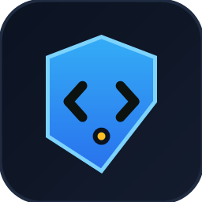

RepackGuard ist ein Watchdog für die Kette hinter dem Mr-Beast-Scam und ähnlichen Repack-Infektionen: Er meldet in Echtzeit, wenn Schadsoftware den Microsoft Defender blendet — und warnt vor Scam-Links, bevor sie laden.
Ein Infostealer-Download (Crack, Mod, Cheat, „Robux-Generator") entwendet Browser-Passwörter und den Discord-Session-Token. Damit meldet sich der Angreifer im eigenen Account an — ohne Passwort, 2FA wird umgangen — und lasst automatisch Scam-Nachrichten an alle Freunde verschicken. Jeder Klick auf den Link startet die Kette von vorn. Der Betroffene wird selbst zum Verbreiter.
Datei herunterladen und ausführen. Infostealer läuft, oft ohne Symptome.
Session-Token und Cookies werden ausgelesen — 2FA nützt nichts.
Angreifer nutzt den Token, um sich im eigenen Account anzumelden.
Automatische Scam-Nachrichten an alle Freunde und Server.
Ein portabler Erkennungskern in C, eine Desktop-App für den direkten Schutz und eine Browser-Erweiterung für die indirekten Opfer.
Läuft im Hintergrund, liest das Defender-Eventlog und ruft den C-Kern per P/Invoke auf. Bei AV-Manipulation: Alarm-Popup mit Sofortmaßnahmen (Discord-Sitzungen beenden, Passwörter ändern, Scan starten).
Browser-Erweiterung (Chrome/Edge/Firefox). Prüft angeklickte Links gegen eine Scam-Datenbank und Heuristik und leitet vor der Seite auf eine Warnseite um.
Die Erkennungslogik als reine Funktion: Liste von Ereignissen rein, Report raus. Unabhängig von Windows testbar — mit dem realen Vorfall als Testfall.
Zwei Wege: Die Browser-Erweiterung in einer Minute, die Desktop-App aus dem Quelltext.
Chrome/Edge: chrome://extensions → Entwicklermodus →
„Entpackte Erweiterung laden“ → Ordner browser-extension wählen.
Firefox: about:debugging → „Firefox“ → „Eigene Erweiterungen laden“
→ manifest.json wählen.
Alle Erkennungslogik ist gegen echte Fälle getestet — darunter der dokumentierte Vorfall vom 14.11.2026.
Nein. Es ergänzt Defender/Malwarebytes um eine Schicht, die genau das Muster erkennt, das normale Scanner nicht als Ganzes werten.
Die Repack- und Scam-Kette verteilt Windows-Programme. Der C-Kern selbst ist portabel; die Windows-Anbindung (Eventlog, Tray) ist es nicht.
Nein — gegen das dokumentierte Muster (Quarantäne-Restore + Defender-Ausnahme) und gegen bekannte Scam-Domains. Es ist ein Spezialwerkzeug, ehrlich benannt.
Scam-Domains in data/domains.json ergänzen, Fälle melden
oder die Erweiterung auf eure Community bringen.
RepackGuard ist kostenlos und Open Source. Zwei Dinge kosten Geld und lassen sich spendend decken:
Die einmalige Registriergebühr beträgt 5 $. Sie ist die Voraussetzung, um Link Guard auch im Chrome-Store anzubieten.
Für den Windows-Installer gibt es kostenlose Signaturen über die SignPath Foundation (Bewerbung nötig). Spenden helfen, die Wartezeit und Anerkennung zu überbrücken.
Monatlich oder einmalig — über GitHub Sponsors (Stripe). Jede Spende wird veröffentlicht und für die genannten Zwecke verwendet. Der quelloffene Code bleibt davon unberührt.